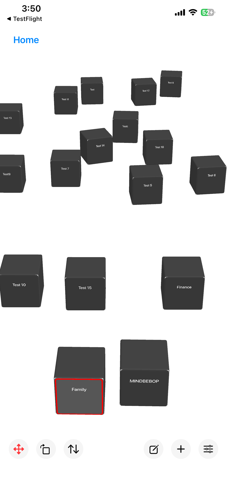
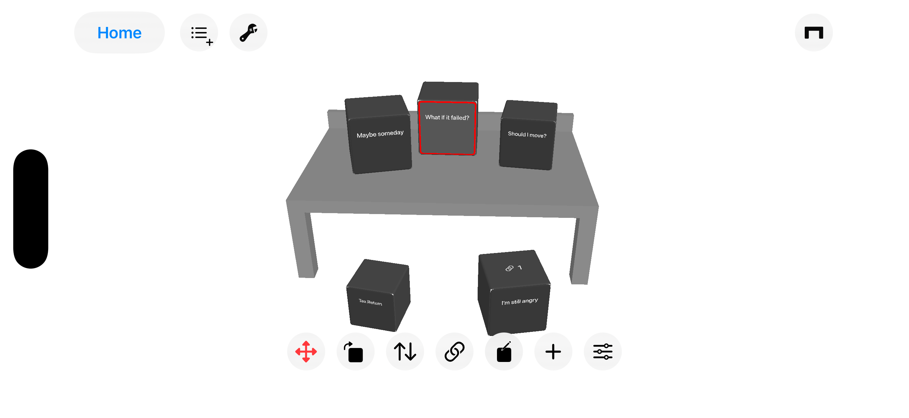

생각에 자리를 마련하고, 가능한 경로를 열어 두며, 그 생각에서 출발해 언제 어디로 나아갈지, 혹은 나아가지 않을지를 스스로 결정할 수 있는 공간.
다른 일을 하는 동안에도 생각은 Mental Background를 떠돌 수 있습니다.
어떤 생각은 그냥 지나갑니다.
어떤 생각은 계속 돌아옵니다.
때로는 생각과 맺는 관계를 바꾸는 것만으로 충분합니다.
다른 관점에서 바라볼 수도 있습니다.
잠시 내려놓을 수도 있습니다.
주의를 덜 기울일 수도 있습니다.
경계를 만들 수도 있습니다.
또는 주의가 다른 곳으로 움직이도록 할 수도 있습니다.
그러면 생각이 가라앉을 수도 있습니다.
하지만 때로는 그대로 남아 있습니다.
생각 공간은 생각을 해결하거나 정리하거나 할 일로 바꾸지 않아도, 그 생각이 존재할 수 있는 자리를 제공합니다.
그리고 언젠가 그 생각에서 출발해 가고 싶은 곳이 생긴다면, 그 자리에서 경로를 시작할 수 있습니다.
생각에는 목적지가 생기기 전에도
자리가 있을 수 있습니다.


MINDBEBOP의 많은 기능은 말로 표현할 수 있는 생각에서 시작됩니다.
한 문장.
걱정.
잊지 말아야 할 일.
아이디어.
스스로에게 반복해서 하는 말.
주의를 다른 곳에 기울여야 할 때 떠오르는 생각.
이러한 언어적 생각은 MINDBEBOP이 Mental Background라고 부르는 영역을 떠돌 수 있습니다.
MINDBEBOP은 Mental Background의 모든 생각이 중요하다고 가정하지 않습니다.
그렇다고 반복되는 모든 생각이 의미 없는 소음이라고 가정하지도 않습니다.
생각마다 필요한 관계의 방식은 다를 수 있습니다.
어떤 생각은 생각 소음처럼 작용할 수 있습니다.
반복되기도 합니다.
주의를 방해하기도 합니다.
실제 중요성에 비해 지나치게 크게 느껴지기도 합니다.
또는 그냥 내버려 두기가 어려울 수도 있습니다.
MINDBEBOP의 여러 도구는 이러한 생각과 맺는 관계를 바꾸는 다양한 방법을 제공합니다.
MindFlipOut
반복되는 생각을 다른 관점에서 바라봅니다.
MindShoutOut
지금 계속 마음에 담아 둘 필요가 없는 생각을 잠시 내려놓습니다.
MindZoneOut
과부하된 마음에 조용한 시간을 제공합니다.
MindBackOut
선택한 앱과 거리를 둡니다.
MindBackyard
주의가 움직일 수 있는 공간을 마련합니다.
때로는 생각과 맺는 관계를 바꾸는 것만으로 충분합니다.
생각이 가라앉습니다.
더 이상 아무것도 할 필요가 없습니다.
하지만 어떤 생각은 계속 남아 있습니다.
여기서 MINDBEBOP이 탐구하기 시작한 질문이 생깁니다.
생각과 맺는 관계를 바꾸는 것만으로 충분하지 않다면,
그 생각에서 출발해 가고 싶은 곳이 여전히 있을 수도 있지 않을까요?
이것은 하나의 가설입니다.
MINDBEBOP은 지속되는 모든 생각에 숨겨진 목표나 목적지가 있다고 가정하지 않습니다.
생각 공간은 그것을 알아볼 수 있는 장소를 제공합니다.
Mental Shelving은 어떤 생각이 당장 주의를 차지하지 않도록 의식적으로 잠시 내려놓는 행위입니다.
그 생각이 반드시 해결된 것은 아닙니다.
반드시 잊힌 것도 아닙니다.
나중에 다시 돌아올 수 있도록 남겨 두면서, 지금은 잠시 떠나 있을 수 있게 하는 것입니다.
생각 공간은 이 행위를 공간적으로 표현합니다.
생각
↓
Thought Block
↓
생각 공간에 자리를 마련합니다
↓
그곳에 둡니다
↓
원할 때 돌아옵니다
이것을 Spatial Mental Shelving이라고 부릅니다.
여기서 'Shelving'은 실제 선반이나 화면에 그려진 선반을 뜻하지 않습니다.
생각을 잠시 내려놓는 정신적 행위를 뜻합니다.
생각 공간은 그 행위에 눈에 보이고 지속되는 공간적 자리를 제공합니다.
Thought Block은 그 공간 어딘가에 그냥 존재할 수 있습니다.
선반 모양의 물체가 필요하지 않습니다.
분류가 필요하지 않습니다.
우선순위가 필요하지 않습니다.
마감일이 필요하지 않습니다.
행동도 필요하지 않습니다.
생각에 자리를 마련하세요.
잃어버리지 않으면서
잠시 내려놓으세요.
대부분의 디지털 시스템은 생각을 정보로 바꿉니다.
생각
↓
텍스트
↓
목록 항목
생각 공간은 다른 표현 방식을 탐구합니다.
생각
↓
Thought Block
↓
자리
Thought Block은 생각에 공간 속에서 지속되는 시각적 존재감을 부여합니다.
움직일 수 있습니다.
주위를 돌아다닐 수 있습니다.
회전할 수 있습니다.
크기를 바꿀 수 있습니다.
가까이 다가갈 수 있습니다.
멀리 떨어질 수 있습니다.
어딘가에 놓아둘 수 있습니다.
나중에 돌아올 수 있습니다.
또는 그냥 내버려 둘 수 있습니다.
생각이 보인다고 해서 반드시 다뤄야 하는 것은 아닙니다.
다음 두 가지에는 차이가 있습니다.
이걸 계속 기억하고 있어야 해.
그리고:
그게 어디 있는지 알아.
Spatial Mental Shelving은 생각에 지속되는 자리를 마련하는 것이 두 번째 감각을 만드는 데 도움이 될 수 있는지 탐구합니다.
생각은 계속 접근할 수 있는 상태로 남습니다.
하지만 접근할 수 있다는 것이 항상 주의의 전면에 두어야 한다는 뜻은 아닙니다.
대부분의 소프트웨어는 정보를 사용자의 주의 앞으로 가져옵니다.
이것을 보세요.
이것을 기억하세요.
여기에 답하세요.
다음에는 이것을 하세요.
생각 공간은 이 관계를 뒤집을 수 있습니다.
Thought Block은 제자리에 머물 수 있습니다.
다가갈지는 스스로 결정합니다.
생각이 나를 방해하는 것이 아닙니다.
내가 그 생각에 다가가기로 선택하는 것입니다.
다가가서 잠시 머물 수 있습니다.
움직일 수도 있습니다.
그 생각에 대해 새로운 것을 발견할 수도 있습니다.
또는 돌아서서 그대로 두고 떠날 수도 있습니다.
다가갈지 결정하는 것은 당신입니다.
대부분의 정보 시스템은 입력한 내용을 빠르게 분류하도록 요구합니다.
어떤 카테고리인가요?
어떤 프로젝트인가요?
우선순위는 무엇인가요?
마감일은 언제인가요?
생각 공간은 더 기본적인 질문에서 시작할 수 있습니다.
이것을 어디에 두고 싶나요?
그것만으로 충분할 수 있습니다.
배치는 정리보다 먼저 이루어질 수 있습니다.
또는 정리 자체가 전혀 필요하지 않을 수도 있습니다.
목록은 보통 순서, 이름표, 카테고리를 통해 관계를 표현합니다.
공간은 배치를 통해 관계를 표현할 수 있습니다.
어떤 생각은 가까이에 있을 수 있습니다.
다른 생각은 더 멀리 있을 수 있습니다.
두 생각이 서로 가까이 놓일 수도 있습니다.
어떤 것은 시야에 바로 들어올 수 있습니다.
다른 것은 좀처럼 마주치지 않는 곳에 둘 수 있습니다.
생각 공간은 이러한 위치에 보편적인 의미를 부여할 필요가 없습니다.
가깝다고 해서 더 중요하다는 뜻은 아닙니다.
멀다고 해서 덜 중요하다는 뜻도 아닙니다.
작다고 해서 의미가 작다는 뜻은 아닙니다.
특정한 회전이 특정한 종류의 생각을 의미할 필요도 없습니다.
배치는 단지 그 생각들이 자신을 둘러싼 공간에 어떻게 존재하기를 원하는지 반영할 수 있습니다.
마음속에 있는 것을 항상 정식으로 검토할 필요는 없습니다.
생각 공간을 돌아다니다가 우연히 생각과 마주칠 수도 있습니다.
아, 저게 아직 거기 있네.
이제는 다르게 보이네.
저 두 가지는 연결되어 있을지도 몰라.
아직은 저걸 다루고 싶지 않아.
어쩌면 여기서 가고 싶은 곳이 있을지도 몰라.
그리고 계속 움직이면 됩니다.
마주치는 모든 것을 처리할 필요는 없습니다.
생각 공간은 생각을 확인하는 경험을 받은편지함을 검토하는 일보다 환경 속의 무언가와 마주치는 경험에 가깝게 만들 수 있습니다.
Thought Block은 목표와 같지 않습니다.
Mental Destination과도 같지 않습니다.
다음과 같은 이름의 Thought Block을 생각해 보세요.
가족
가족은 목적지가 아닙니다.
하지만 그 생각에서 여러 방향이 나타날 수 있습니다.
가족
↙ ↓ ↘
방해받지 않고 함께 보내는 시간 늘리기
경제적 여유 더 만들기
집에서 더 인내심 있게 행동하기
이러한 방향은 동시에 존재할 수 있습니다.
서로 다른 시기에 중요해질 수 있습니다.
서로 다른 시간 규모에서 작용할 수 있습니다.
결국 서로 다른 Mental Destination으로 이어질 수도 있습니다.
또는 Mental Navigation으로 이어지지 않을 수도 있습니다.
따라서 Thought Block에 하나의 고정된 방향 벡터가 필요하지는 않습니다.
Thought Block은
여러 방향이 가능한 출발점이 될 수 있습니다.
생각 공간은 가능한 경로를 생각과 함께 유지할 수 있는 구체적인 방법을 제공합니다.
Thought Block을 MindEntry에 저장된 Mental Steps와 연결할 수 있습니다.
하나의 Thought Block에 Mental Steps 한 세트를 연결할 수 있습니다.
여러 세트를 연결할 수도 있습니다.
Thought Block
↓
Mental Steps
Mental Steps
Mental Steps
Mental Steps가 연결되면 Thought Block에 작은 연결 표시가 나타납니다.
숫자는 연결된 Mental Steps가 몇 세트 있는지 보여 줍니다.
표시를 탭하면 해당 생각과 연결된 Mental Steps를 볼 수 있습니다.
하나를 선택하면 MindEntry에서 열리고, 그 Mental Steps를 시작할 수 있습니다.
생각과 마주하기
↓
가능한 경로 보기
↓
원할 때 하나 선택하기
↓
MindEntry에서 Mental Steps 시작하기
Thought Block은 여전히 그 생각 자체로 남습니다.
연결된 Mental Steps는 가능한 경로로 남습니다.
그중 하나를 선택해 진행할지는 당신이 결정합니다.


기존 Mental Steps를 연결하는 것만이 유일한 방법은 아닙니다.
Thought Block과 마주했을 때, 현재 원하는 방향에 맞는 경로가 하나도 없다는 것을 깨달을 수 있습니다.
또는 아직 그 생각에 대한 Mental Steps를 만들지 않았을 수도 있습니다.
생각 공간은 새로운 Mental Steps를 만드는 출발점이 될 수도 있습니다.
처음부터 완성된 계획을 요구하는 대신, 생각과 상호작용하면서 가능한 Mental Destination을 발견하도록 도울 수 있습니다.
그곳에서 MindEntry는 Mental Steps를 통해 움직이기 시작하도록 도울 수 있습니다.
Thought Block
↓
무엇을 할 수 있을지 탐색하기
↓
Mental Destination 선택하기
↓
Mental Steps 만들기
↓
Mental Navigation 시작하기
중요한 구분은 그대로 유지됩니다.
Thought Block이 자동으로 할 일이 되는 것은 아닙니다.
그 생각과의 상호작용이 행동으로 이어질지는 당신이 결정합니다.
Spatial Mental Shelving은 생각에 자리를 마련합니다.
하지만 생각에 자리가 생기면 또 다른 질문이 나타납니다.
어떤 구조가
우리가 생각과 마주하는 방식을 바꿀 수 있을까요?
MINDBEBOP은 이러한 구조를 Thought Furniture라고 부릅니다.
Thought Furniture는 생각 공간의 단순한 장식이 아닙니다.
생각과 상호작용하는 특정한 방식을 설계하는 것입니다.
Thought Furniture는 생각을 살펴보거나, 관점을 바꾸거나, 가능한 방향을 탐색하거나, 다른 방식으로 생각을 다루도록 도울 수 있습니다.
Workbench는 그 첫 번째 구체적인 사례입니다.
어떤 생각은 우리를 무언가로부터 보호하려는 것처럼 보입니다.
실패를 예상할 수도 있습니다.
거절.
상실.
당황스러운 상황.
또는 피하고 싶은 다른 결과를 예상할 수도 있습니다.
MINDBEBOP은 이러한 생각을 Fear-based Protective Thoughts(두려움에 기반한 보호적 생각)라고 부릅니다.
예를 들어:
실패하면 어떡하지?
이 생각은 계속 돌아올 수 있습니다.
주의를 방해할 수 있습니다.
다른 관점에서 보거나 잠시 내려놓으려고 할 수도 있습니다.
때로는 그것만으로 충분합니다.
하지만 때로는 생각이 계속 남아 있습니다.
Workbench는 그 생각과 관계를 맺는 또 다른 방법을 제공합니다.
생각을 즉시 없애려고 하기보다 Workbench는 한 가지 질문을 던집니다.
이 생각이 당신이 할 수 있는 유용한 행동을 알려 줄 수 있을까요?
반드시 그렇다고 답할 필요는 없습니다.
Workbench는 답변에 따라 서로 다른 선택지를 제공합니다.

그 생각이 유용한 행동을 제안할 수 있다고 느낀다면, Workbench는 묻습니다.
무엇을 할 수 있나요?
답은 직접 입력합니다.
예를 들어 다가오는 발표에서 실패할까 봐 걱정된다면 이렇게 답할 수 있습니다.
발표 도입부를 5분 동안 연습하기.
Workbench는 이 답변을 새로운 Mental Destination이자 새로운 Mental Steps 세트의 이름으로 사용할 수 있습니다.
이후 MindEntry는 Adaptive Steps를 통해 그 목적지를 향해 움직이도록 도울 수 있습니다.
Fear-based Protective Thought
↓
무엇을 할 수 있나요?
↓
당신의 답변
↓
Mental Destination
↓
Adaptive Steps
↓
Mental Navigation
Workbench는 무엇을 해야 하는지 결정하지 않습니다.
스스로 유용한 행동을 발견할 기회를 제공합니다.
그리고 다음 단계는 지금 있는 자리에서 시작할 수 있을 만큼 작아도 됩니다.
때로는 보호적 생각이 유용한 행동을 제안하는지 확신할 수 없습니다.
과거에도 비슷한 걱정을 했을 수 있습니다.
그리고 그런 걱정에도 불구하고 이미 Mental Destination을 향해 움직인 경험이 있을 수 있습니다.
MindAnchor는 과거 Mental Navigation에서 두 종류의 정보를 보존할 수 있습니다.
Expected Blocks
앞을 가로막을 것이라고 예상했던 장애물.
What really happened
실제로 경험한 일.
두 가지가 모두 기록되어 있다면 Workbench에서 비교할 수 있습니다.
예를 들어:
Expected Block
발표 도중 머릿속이 하얘져서 아무 말도 못 할 거야.
What really happened
처음에는 긴장했지만 발표를 끝까지 마쳤어.
이 비교가 다음 경험도 똑같이 진행될 것이라는 증거는 아닙니다.
두려워하던 장애물이 사라진다고 보장하지도 않습니다.
원래의 두려움이 근거 없었다는 뜻도 아닙니다.
단지 예상했던 것과 실제 경험한 것을 비교할 기회를 제공합니다.
그 결과 지금 그 생각을 바라보는 방식이 달라질 수도 있습니다.
달라지지 않을 수도 있습니다.
해석은 당신의 몫입니다.
때로는 행동을 탐색하고 싶지 않을 수 있습니다.
과거 경험을 돌아보고 싶지 않을 수도 있습니다.
그저 조용한 시간을 원할 수도 있습니다.
Workbench는 MindZoneOut의 None 모드에서 자극이 적은 세션을 선택할 수 있도록 합니다.
Mental Destination을 정할 필요가 없습니다.
Mental Steps를 만들 필요도 없습니다.
그 생각을 해결한 뒤에야 떠날 수 있는 것도 아닙니다.
모든 생각에 답이 필요한 것은 아닙니다.
때로는 그냥 조용한 시간을 선택할 수 있습니다.
보호적 생각이 반드시 나쁜 일이 일어날 것이라는 경고인 것은 아닙니다.
그렇다고 자동으로 의미 없는 소음인 것도 아닙니다.
Workbench는 어떤 해석이 옳은지 결정하지 않습니다.
생각을 진단하지 않습니다.
Mental Destination을 정하지 않습니다.
Mental Steps를 만들라고 요구하지 않습니다.
그 생각과 맺는 관계를 탐색할 수 있는 구조를 제공합니다.
유용하게 할 수 있는 일이 있을지도 모릅니다.
떠올려 보면 도움이 될 경험이 있을지도 모릅니다.
또는 지금은 아무것도 하고 싶지 않을 수도 있습니다.
세 가지 모두 가능한 선택입니다.
이것이 Workbench가 Thought Furniture의 한 사례인 이유입니다.
구조는 가능한 상호작용을 바꿉니다.
하지만 결정은 여전히 당신의 몫입니다.
Thought Block에 Mental Steps를 연결한다고 해서 생각이 할 일이 되는 것은 아닙니다.
새로운 Mental Steps를 만든다고 해서 모든 단계를 완료해야 하는 것도 아닙니다.
하나의 가능한 경로가 반드시 가장 중요한 경로가 될 필요는 없습니다.
여러 경로를 동시에 열어 둘 수 있습니다.
그리고 어느 경로도 따라가지 않아도 됩니다.
이 생각은 여기에 있습니다.
여기서 갈 수 있는 곳들이 있습니다.
지금 당장 어디로도 갈 필요는 없습니다.
생각 공간은 당신의 삶을 들여다보고 이렇게 선언하는 시스템이 되어서는 안 됩니다.
목표 7개.
단계 23개.
이미 끝냈어야 할 일 3개.
그렇게 되면 가능성이 압박으로 바뀝니다.
생각 공간은 그 반대의 가능성을 탐구합니다.
경로는 열려 있을 수 있습니다.
그것이 요구가 될 필요는 없습니다.
때로는 Thought Block에 다가가 실제로 무언가를 바꾸고 싶다는 것을 깨닫습니다.
지금 있는 곳에서 가고 싶은 곳이 생긴 것입니다.
가능한 방향이 의도적으로 선택한 방향이 될 수 있습니다.
이미 Thought Block에 연결된 Mental Steps를 선택할 수도 있습니다.
또는 Workbench와 같은 상호작용을 통해 새로운 Mental Destination을 발견할 수도 있습니다.
중요한 변화는 Thought Block이 할 일이 되었다는 것이 아닙니다.
당신이 방향을 선택했다는 것입니다.
생각
↓
가능한 방향
↓
선택한 방향
↓
Mental Destination
↓
Mental Navigation
MindEntry는 Navigation 계층을 제공합니다.
Mental Steps를 통해 Mental Destination을 향해 움직일 수 있습니다.
다음 움직임을 실행합니다.
그 후 자신이 어디에 있는지 확인합니다.
경로를 바꿀 수 있습니다.
Mental Destination을 바꿀 수 있습니다.
또는 새로운 Current Position에서 계속할 수 있습니다.
이 구분은 중요합니다.
Mental Navigation은 Mental Destination을 향해 의도적으로 움직이는 것입니다.
Current Position
↓
Mental Steps
↓
Mental Destination
생각 공간에는 이 중 어느 것도 필수가 아닙니다.
Mental Destination 없이 들어갈 수 있습니다.
어디에도 도착하려 하지 않고 움직일 수 있습니다.
Navigation을 시작하지 않고 Thought Block을 바라볼 수 있습니다.
Mental Steps를 연결해 두고도 시작하지 않을 수 있습니다.
여러 방향을 보고도 아무것도 선택하지 않을 수 있습니다.
생각 공간은 가능성이 Navigation이 되기 전에도
그 가능성을 담아 둘 수 있습니다.
MindBackyard에는 주의와 서로 다른 관계를 맺기 위한 여러 공간이 있습니다.
Infinite Hallway에는 생각해야 할 것이 거의 없습니다.
움직이기.
거닐기.
주의를 느슨하게 하기.
생각 공간에서는 자신의 마음에서 나온 것들이 환경 속에 존재할 수 있습니다.
움직이기.
알아차리기.
다가가기.
방향 바꾸기.
지나가기.
어느 공간에도 목적지는 필요하지 않습니다.
Infinite Hallway는 Mental Navigation의 일부가 될 수도 있습니다.
Mental Step이 잠시 그곳으로 안내한 뒤, 계속할 준비가 되었을 때 같은 활성 Mental Step으로 돌아오게 할 수 있습니다.
따라서 생각 공간과 Infinite Hallway가 같은 환경이 될 필요는 없습니다.
더 큰 MINDBEBOP 시스템 안에서 서로 다른 역할을 할 수 있습니다.
생각 공간은 시각적 작업 관리자가 되기 위한 것이 아닙니다.
To Do, Doing, Done 열이 필요하지 않습니다.
생산성 점수가 필요하지 않습니다.
연속 달성 기록이 필요하지 않습니다.
공간을 채웠다고 보상할 필요도 없습니다.
공간을 비웠다고 보상할 필요도 없습니다.
모든 생각을 일로 바꿀 필요도 없습니다.
모든 가능한 Mental Navigation을 의무로 바꿀 필요도 없습니다.
그렇다고 MINDBEBOP이 생산성을 거부하는 것은 아닙니다.
생산성은 Mental Navigation을 사용하는 여러 이유 중 하나일 수 있습니다.
하지만 생각 공간은 할 일을 완료하는 것과 관계없는 생각과의 관계도 지원합니다.
가능성은 압박이 아닙니다.
생각 공간은 넉넉한 여백을 유지해야 합니다.
빈 영역은 낭비되는 화면 공간이 아닙니다.
경험의 일부입니다.
Thought Block이 항상 바로 앞에 있을 필요는 없습니다.
가능한 경로가 항상 드러나 있을 필요도 없습니다.
환경이 끊임없이 주의를 끌려고 경쟁해서는 안 됩니다.
생각을 둘러싼 공간은
생각 자체만큼
중요할 수 있습니다.
공간적 환경이 자신의 생각을 찾기 어렵게 만들어서는 안 됩니다.
거닐고 싶을 때 거니는 것은 유용할 수 있습니다.
하지만 이미 원하는 것을 알고 있을 때까지 반드시 돌아다녀야 하는 것은 아닙니다.
탐색은 공간적일 수 있습니다.
다시 찾기는 쉬워야 합니다.
생각 공간은 관리해야 하는 미로가 되어서는 안 됩니다.
생각 공간은 떠날 때마다 초기화될 필요가 없습니다.
Thought Block은 배치한 자리에 그대로 남을 수 있습니다.
Mental Steps도 계속 연결된 상태로 남을 수 있습니다.
하지만 그 생각들과 맺는 관계까지 그대로일 필요는 없습니다.
예전에는 이게 아주 가깝게 느껴졌어.
이제는 조금 더 거리를 두고 싶어.
예전에는 여기서 한 방향만 보였어.
이제는 여러 방향이 보여.
예전에는 이걸 해결해야 한다고 생각했어.
이제는 그냥 내버려 두어도 괜찮아.
Thought Block에 적힌 말은 변하지 않았을 수도 있습니다.
달라진 것은 그 생각과 마주하는 방식일 수 있습니다.
대부분의 앱은 정보의 최신 상태를 보존합니다.
생각 공간은 조금 더 조용한 무언가를 보존할 수도 있습니다.
가까이 남아 있던 것.
멀어진 것.
계속 남아 있던 것.
다시 돌아갔던 것.
다르게 보이기 시작한 것.
며칠, 몇 주, 몇 달 뒤에 돌아왔을 때 공간이 다르게 느껴질 수 있습니다.
앱이 점수를 계산했기 때문이 아닙니다.
대시보드가 발전했다고 알려 주었기 때문도 아닙니다.
스스로 차이를 알아보기 때문입니다.
이것과 맺는 나의 관계가 달라졌어.
이러한 변화에 완료된 Mental Navigation이 필요한 것은 아닙니다.
때로는 무언가를 움직이거나, 그대로 두거나, 다르게 마주하는 것만으로 충분할 수 있습니다.
생각 공간은 모든 생각을 시각화하기 위한 것이 아닙니다.
3D 마인드맵이 아닙니다.
모든 연관성을 드러낼 필요가 없습니다.
모든 것을 서로 연결할 필요도 없습니다.
때로는 적게 보는 것이 더 유용할 수 있습니다.
Thought Block은 모든 관계를 드러내지 않고도 존재할 수 있습니다.
가능한 방향을 탐색하지 않은 채 남겨 둘 수 있습니다.
생각 하나가 홀로 남아 있을 수도 있습니다.
생각 공간은 마음의 구조를 재구성하는 것보다, 그 안에 있는 것들과 의도적으로 관계를 맺는 방법을 제공하는 데 더 관심이 있습니다.
Spatial Mental Shelving은 생각에 지속되는 자리를 제공합니다.
Mental Steps와의 연결은 가능한 경로를 열어 둡니다.
Workbench는 Fear-based Protective Thoughts와 상호작용하는 방식으로 Thought Furniture를 소개합니다.
이러한 기능은 함께 더 많은 실험의 가능성을 열어 줍니다.
생각에 자리가 생길 수 있다면,
우리가 그 생각과 마주하는 방식을 또 무엇이 바꿀 수 있을까요?
미래의 Thought Furniture는 무언가를 드러낼 수 있습니다.
숨길 수도 있습니다.
걸러낼 수도 있습니다.
분리할 수도 있습니다.
결합할 수도 있습니다.
방향을 다시 잡을 수도 있습니다.
변형할 수도 있습니다.
또는 가능한 방향을 더 쉽게 알아차리게 할 수도 있습니다.
A라는 이름의 Thought Block을 상상해 보세요.
A → A를 바라보는 또 다른 관점
A → 가능한 방향
A → 더 작은 부분들
A + B → 새롭게 보이는 무언가
ABC → CBA
A → 잠시 시야 밖으로
A → Mental Steps
A → ?
이것들은 설계의 가능성이지, 생각이 반드시 이렇게 작동한다는 주장이 아닙니다.
중요한 것은 Furniture의 외형이 아닙니다.
그 상호작용이 생각과 어떤 관계를 가능하게 하는지가 중요합니다.
Thought Furniture는 장식이 아닙니다.
생각과의 관계를 설계하는 실험입니다.
MINDBEBOP이 탐구하는 가능성 중 하나는 Thought Orientation입니다.
때로는 계속 나아가기 위해 목적지를 바꿔야 합니다.
때로는 목적지를 더 작게 만드는 것이 계속 움직이는 데 도움이 됩니다.
하지만 Thought Orientation은 다른 질문을 던집니다.
Point B를 곧바로 바꾸는 대신,
그것을 바라보는 방식을 바꾸면 어떻게 될까요?
돌려 보세요.
예상하지 못한 위치에서 바라보세요.
무엇이 떠오르는지 살펴보세요.
Thought Block 자체는 바뀔 필요가 없을 수도 있습니다.
달라지는 것은 그것과 마주하는 방식일 수 있습니다.
같은 생각.
다른 관점.
다른 것들이 보입니다.
다른 관점에서 새로운 가능한 방향이 보일 수도 있습니다.
기존 Mental Destination이 다르게 보일 수도 있습니다.
새로운 Mental Destination이 나타날 수도 있습니다.
또는 Navigation이 필요하지 않다는 것을 깨달을 수도 있습니다.
Thought Furniture는 어떤 해석이 옳은지 결정해서는 안 됩니다.
다른 곳에서 바라볼 수 있는 기회를 만들어야 합니다.
Mental Navigation은 결국 Mental Destination에 도달할 수 있습니다.
하지만 도착했다고 해서 원래의 Thought Block이 반드시 사라져야 하는 것은 아닙니다.
Thought Block은 애초에 목적지와 같은 것이 아니었습니다.
나중에 그 생각에서 또 다른 방향이 나타날 수 있습니다.
그리고 Navigation을 거친 경험이 원래의 생각과 마주하는 방식을 바꿀 수도 있습니다.
생각
↓
Mental Navigation
↓
도착
↓
어쩌면 이제 그 생각이 다르게 보일 수도 있습니다
Point B에 도달했다고 해서 그 생각이 영원히 끝났다고 선언할 필요는 없습니다.
MindAnchor는 성공적인 Mental Navigation에서 의미 있는 무언가를 보존할 수 있습니다.
또한 예상했던 장애물과 실제로 일어난 일을 기록할 수 있습니다.
두 기록이 모두 있다면 Workbench에서 활용할 수 있습니다.
이를 통해 과거의 Mental Navigation과 미래에 보호적 생각을 마주하는 경험 사이에 연결이 생깁니다.
Expected Blocks
↓
Mental Navigation
↓
What really happened
↓
MindAnchor
↓
미래의 Workbench에서 다시 마주하기
이 기록은 무엇을 생각해야 하는지 알려 주지 않습니다.
비교할 수 있는 자료를 제공할 뿐입니다.
그 비교는 미래의 생각을 다르게 바라보는 데 도움이 될 수 있습니다.
여기에는 더 큰 질문도 남아 있습니다.
성공적인 Navigation에서 MindAnchor에 보존한 무언가가
다른 Navigation을 시작할 때의 관점을 바꿀 수 있을까요?
MINDBEBOP은 그 답을 미리 정하지 않습니다.
그 질문을 탐구할 수 있는 방법을 제공합니다.
이러한 아이디어를 종합하면 MINDBEBOP의 더 큰 구조를 상상할 수 있습니다.
언어로 표현되는 생각이 Mental Background에 나타납니다.
↓
생각과 맺는 관계를 바꾸는 것만으로 충분할 수 있습니다.
↓
때로는 생각이 계속 남아 있습니다.
↓
생각 공간에 자리를 마련합니다.
↓
다양한 관점에서 그 생각과 마주합니다.
↓
가능한 경로를 탐색하거나 Thought Furniture를 통해 상호작용합니다.
↓
가고 싶은 곳이 있다면 Mental Destination을 선택합니다.
↓
Navigation을 진행합니다.
↓
도착합니다.
↓
도착한 경험에서 무언가를 MindAnchor에 보존합니다.
↓
다음에는 무엇이 다르게 보이는지 살펴봅니다.
이것은 마음이 작동하는 방식에 대한 규칙이 아닙니다.
MINDBEBOP이 탐구하는 하나의 모델입니다.
어떤 생각은 훨씬 일찍 가라앉을 수 있습니다.
어떤 생각은 Navigation으로 이어지지 않은 채 생각 공간에 머물 수 있습니다.
어떤 생각은 여러 가능한 방향을 만들어 낼 수 있습니다.
어떤 생각은 한곳으로 이어졌다가 나중에 다른 곳으로 이어질 수 있습니다.
어떤 생각은 Mental Steps를 만들지 않고 Workbench에서 다뤄질 수도 있습니다.
시스템이 어떤 일이 일어나야 하는지 결정할 필요는 없습니다.
생각 공간은 단순한 질문에서 시작되었습니다.
생각을 잠시 내려놓는 행위가
공간적인 경험이 된다면 어떻게 될까요?
이제 이 실험은 더 커지고 있습니다.
다음과 같은 질문을 할 수 있습니다.
생각에 자리를 마련하면 계속 기억해야 한다는 느낌이 달라질까요?
생각이 나를 방해하는 것과 내가 생각에 다가가는 것은 다르게 느껴질까요?
생각과의 관계를 조금 바꾸는 것만으로 가라앉는 생각은 무엇일까요?
계속 남는 생각은 무엇일까요?
남아 있는 생각 중 일부에는 가능한 방향이 있는 것처럼 보일까요?
하나의 Thought Block에 여러 경로가 있어도 어느 경로를 따라야 한다는 압박을 만들지 않을 수 있을까요?
Thought Furniture는 생각과 다르게 마주하는 데 도움이 될까요?
보호적 생각이 때로는 유용한 행동을 제안할 수 있을까요?
Expected Blocks와 What really happened를 비교하면 생각과 마주하는 방식이 달라질까요?
관점을 바꾸면 이전에는 보이지 않던 방향이 나타날까요?
Mental Destination에 도달하면 나중에 원래의 생각과 마주하는 방식이 달라질까요?
답을 미리 알 필요는 없습니다.
생각 공간은 그것을 알아볼 수 있는 장소를 제공합니다.
생각에 자리를 마련하세요.
행동을 요구하지 않아도 그곳에 머물게 하세요.
가능한 경로를 의무로 바꾸지 않고 열어 두세요.
필요하다면 생각과 관계를 맺는 다른 방식을 탐색하세요.
다른 관점이 도움이 될 것 같다면 관점을 바꿔 보세요.
가고 싶은 곳이 생기면 Navigation을 시작하세요.
그리고 도착한 곳에서 다음에 보이는 것이 달라지는지 살펴보세요.
생각 공간은 MINDBEBOP Mental Background OS의 일부로 MindBackyard를 통해 실험되고 있습니다.
Copyright © 2026 MINDBEBOP — All rights reserved.